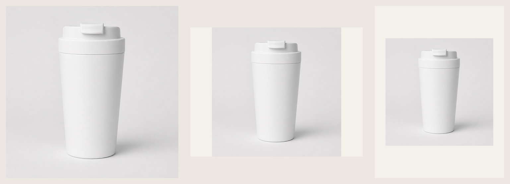

Manual run: portable coffee cup
Input and first value
Test input: 420 ml, matte white, flip lid, unbranded, commuting use.
Passed No structured product brief was required, so the run returned a public-market conclusion first.
Raw search evidence: 01-search-results.md
Current test conclusion
Core flow passed Image sample quality failed Search, category copy, and the complete ten-platform image brief were verified; two Amazon adaptations were rejected as drafts because the product fidelity and pure-white-background checks failed.
CCAPI generated hero image

GPT Image 2 · CCAPI · 1024×1024; generated media still requires human review.
Observed public-market prices
| Candidate | Observed price | Evidence | Scope |
|---|---|---|---|
| KeepCup Traveler 12oz | US$34.00 | Public page | US page observation; SKU, region, and shipping still need checking |
| HydroJug Coffee Traveler 20oz | US$29.99 | Target page | 20oz; not directly equivalent to 420ml |
| Contigo Luxe 16oz | US$39.49 | Coleman page | Displayed page price; stock and promotions can change |
| Corkcicle Commuter Cup 17oz | US$40.00 | Brand page | 17oz; different capacity and region |
| SUNY Tritan 420ml | NT$459 | PChome page | Similar capacity; currency, material, and marketplace differ |
Observed US-page range: US$29.99–40.00. This is not a transaction price, sales volume, or stable search ranking.
Opportunities and risks
- Public discussions repeatedly mention sealing, cleaning, lid assembly, and replacement-part issues.
- Prioritize checks for leak testing, cleaning steps, cup-holder fit, and carrying comfort.
- Material, temperature rating, insulation, and dishwasher claims still need product-source confirmation.
Marketplace copy
Cups and USB-C chargers use different category fields; Taobao and Amazon receive different structures. Unknown parameters stay in internal review instead of being inserted into consumer-facing copy.
Unconfirmed items retained: leak-proof, insulation, stainless steel, dishwasher-safe, food-grade, and certification claims.
Ten-platform image specifications
Domestic five: Taobao/Tmall, JD, Pinduoduo, Douyin, and Kuaishou.
Cross-border five: Amazon, eBay, Etsy, Shopify, and AliExpress.
Size, count, format, file-size, background, composition, supporting-image, and master-image rules use only the two specified source documents. View the complete ten-platform image requirements
Observed source-page screenshots
These two images only show that the specified pages were reachable in the test run. They are partial visual evidence, not proof of full data coverage. Fullness is determined by extraction, section mapping, and the ten-platform requirements table; see the tool comparison.


Image branch and marketplace derivatives
Real generation succeeded The local test used GPT Image 2 → CCAPI to generate a 1:1 hero image and a 4:3 variant, then derived marketplace sizes from the 1:1 visual. The open-source Skill does not bind to this local route.

Taobao 800×800, case page 1200×900, and Douyin content image 1080×1440. The first Amazon 2048×2048 adaptation rendered successfully but failed review because the lid structure changed and the background was not strict pure white.
Boundary checks are recorded in 05-boundary-check.md.
Full image branch: 04-image-branch.md